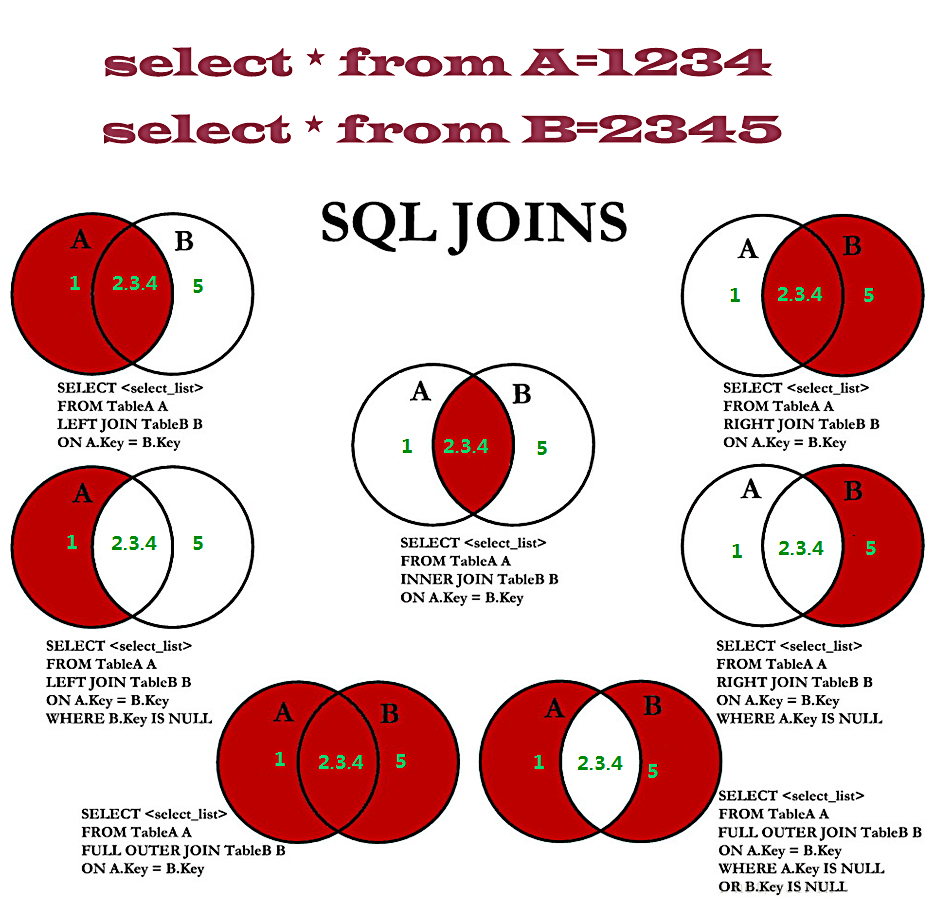

多表查询
多表查询就是在一条查询语句中，从多张表里一起取出所需要的数据，如果要想进行多表查询，直接在FROM子句之后跟上多个表即可。
笛卡尔积
在进行多表连接查询的时候，由于数据库内部的处理机制，会产生一些“无用”的数据，而这些数据就称为笛卡尔积。
- 消除笛卡尔积
表查询时可以利用等值关联字段消除笛卡尔积，eg：1
2
3
4
5
6
7
8
9
10SELECT
e.NAME,
e.JOB,
e.SAL,
d.DNAME
FROM
EMP e,
DEPT d
WHERE
e.DEPTNO = d.DEPTNO
多表查询之中，每当增加一个关联表都需要设置消除笛卡尔积的条件。
连接
对于数据表的连接操作在数据库之中一共定义了两种：
- 内连接：也称为等值连接（或称为连接，还可以被称为普通连接或者自然连接），是最早的一种连接方式，内连接是从结果表中删除与其他被连接表中没有匹配行的所有元组，所以当匹配条件不满足时内连接可能会丢失信息。在之前所使用的连接方式都属于内连接，而在WHERE子句之中设置的消除笛卡尔积的条件就采用了等值判断的方式进行的；
- 外连接：内连接中只能够显示等值满足的条件，如果不满足的条件则无法显示，如果现在希望特定表中的数据可以全部显示，就利用外连接，外连接分为三种：
- 左外连接（简称：左连接）
- 右外连接（简称：右连接）
- 全外连接（简称：全连接）
内连接
eg：1
2
3
4
5
6
7SELECT
*
FROM
EMP e,
DEPT d
WHERE
e.DEPTNO = d.DEPTNO;
外连接
通过left join，right join实现，使用如下：
- Left join 左外连接
- Right join 右外连接
在左连接和右连接时都会以一张A表为基础表，该表的内容会全部显示，然后加上A表和B表匹配的内容。如果A表的数据在B表中没有记录。那么在相关联的结果集行中列显示为空值（NULL）。
左外连接
eg：1
2
3
4
5SELECT
*
FROM
EMP e
LEFT JOIN DEPT d ON e.DEPTNO = d.DEPTNO;
右外连接
eg：1
2
3
4
5SELECT
*
FROM
EMP e
RIGHT JOIN DEPT d ON e.DEPTNO = d.DEPTNO;
SQL：1999语法
1 | SELECT [DISTINCT] * | 列名称 [AS] [列别名] , 列名称 [AS] [列别名] ,... |
交叉连接
交叉连接（CROSS JOIN）作用于两个关系上，并且第一个关系的每个元组与第二个关系的所有元组进行连接，这样的操作形式与笛卡尔积是完全相同的，交叉连接的语法如下所示：1
2
3
4SELECT [DISTINCT] * | 列名称 [AS] [列别名] , 列名称 [AS] [列别名] ,...
FROM 表1 表别名1 [CROSS JOIN 表2 表别名2]|
[WHERE 条件(s)]
[ORDER BY 排序的字段1 ASC|DESC ,排序的字段2 ASC | DESC ..] ;
eg：1
2
3
4
5
6
7SELECT
EMP.NAME
FROM
EMP
CROSS JOIN DEPT
WHERE
EMP.DEPTNO = DEPT.DEPTNO;
自然连接
自然连接（NATURAL JOIN）运算作用于两个关系，最终会通过两个关系产生出一个关系作为结果。与交叉连接（笛卡尔积）不同的是，自然连接只考虑那些在两个关系模式中都出现的属性上取值相同的元组对。自然连接的操作语法如下：1
2
3
4SELECT [DISTINCT] * | 列名称 [AS] [列别名] , 列名称 [AS] [列别名] ,...
FROM 表1 表别名1 [NATURAL JOIN 表2 表别名2]|
[WHERE 条件(s)]
[ORDER BY 排序的字段1 ASC|DESC ,排序的字段2 ASC | DESC ..];
eg：1
2
3
4
5
6
7
8SELECT
*
FROM
EMP
NATURAL JOIN DEPT
ORDER BY
SAL,
COMM;
USING子句
通过自然连接可以直接使用关联字段消除掉笛卡尔积，那么如果现在的两张表中没有存在这种关联字段的话，就可以通过USING子句完成迪卡尔积的消除，USING子句的语法如下所示：1
2
3
4SELECT [DISTINCT] * | 列名称 [AS] [列别名] , 列名称 [AS] [列别名] ,...
FROM 表1 表别名 [JOIN 表2 USING(关联列名称)]|
[WHERE 条件(s)]
[ORDER BY 排序的字段1 ASC|DESC ,排序的字段2 ASC | DESC ..];
eg：1
2
3
4
5SELECT
*
FROM
EMP
JOIN DEPT USING ( DEPTNO );
ON子句
在之前编写等值连接时，采用了关联字段进行笛卡尔积的消除，那么用户在SQL:1999语法之中通过ON子句就可以由用户手工设置一个关联条件，ON子句语法如下：1
2
3
4SELECT [DISTINCT] * | 列名称 [AS] [列别名] , 列名称 [AS] [列别名] ,...
FROM 表1 表别名1 [JOIN 表2 ON(关联条件)]|
[WHERE 条件(s)]
[ORDER BY 排序的字段1 ASC|DESC ,排序的字段2 ASC | DESC ..];
eg：1
2
3
4
5
6
7SELECT
*
FROM
EMP e
JOIN SALGRADE s ON ( e.sal BETWEEN s.LOSAL AND s.HISAL )
ORDER BY
s.GRADE;
连接图解

小结
- 多表查询会产生笛卡尔积，所以性能较差；
- 多表查询时可以利用等值关联字段消除笛卡尔积；
- 多表查询之中，每当增加一个关联表都需要设置消除笛卡尔积的条件；
- 内连接实际上就是等值连接；
- 外连接可以通过left join/right join进行控制；
- 自身关联属于一张表自己关联自己的情况，此时依然会产生笛卡尔积；
- 交叉连接会产生笛卡尔积；
- 自然连接可以自动匹配关联字段消除笛卡尔积；
- 如果要实现全外连接只能够依靠SQL：1999语法。
集合运算
集合运算是一种二目运算符，一共包括四种运算符：并、差、交、笛卡尔积，其中对于笛卡尔积在之前已经为读者讲解过了，所以本次主要是看并、交、差三种操作，操作集合的语法如下所示：1
2
3
4查询语句
[UNION | UNION ALL | INTERSECT | MINUS]
查询语句
....
要实现集合的运算，主要使用四种运算符：
- UNION（并集）：返回若干个查询结果的全部内容，但是重复元组不显示；
- UNION ALL（并集）：返回若干个查询结果的全部内容，重复元组也会显示；
- MINUS（差集）：返回若干个查询结果中的不同部分；
- INTERSECT（交集）：返回若干个查询结果中的相同部分。
注意：
- 开发之中建议使用UNION来代替OR操作；
- 集合操作时，各个查询语句返回的结构要求一致。
eg：1
2
3SELECT * FROM DEPT
MINUS
SELECT * FROM DEPT WHERE DEPTNO = 20;